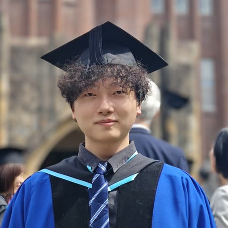

博士後期課程、環境工学 — 東京大学2024.10 – 現在
研究：生体信号（脳波・心電・皮膚電位・呼吸）とAIモデルを用いた睡眠の質・心身回復の定量化。

東京大学大学院（HeiLab）博士課程に在籍。割澤伸一教授・伴祐樹准教授の指導のもと、脳波・心電・皮膚電位・呼吸などの生体情報とAIモデルを統合した睡眠の質の定量評価指標の開発、および空調などを用いた睡眠環境の適応制御による温熱快適性・回復の向上に取り組む。RAGシステムの設計・実装やVLMを用いた画像認識など、AIエンジニアリングの実務経験を持ち、具身AIと次世代ウェアラブルセンシングに取り組むスタートアップElephaneのチームメンバーとしても活動。研究分野：睡眠科学、ヒューマンコンピュータインタラクション、生体信号解析、AI医療技術。
| 言語 | 中国語（ネイティブ）、日本語（ビジネス）、英語（ビジネス） |
|---|---|
| プログラミング・AI | Python, PyTorch, TensorFlow, scikit-learn, MATLAB, R, C++; 信号処理・時系列解析; LLM / Hugging Face API; RAGシステム設計（チャンク最適化、ベクトルDB: Chroma / FAISS / Pinecone / pgvector）; マルチモーダル生体信号融合・リアルタイム取得（Biosignalsplux）; 画像認識（SAM 2.1によるセグメンテーション、VLMのFew-Shotプロンプト） |
| ツール | Git/GitHub, Jupyter, VS Code; Unity, OpenCV, TouchDesigner; Firebase, AWS (Polly, S3), Google Colab; Photoshop, Canva |
| ソフトスキル | 英語ディベート（イチョウ杯ベスト16・8）; 研究発表・ポスター作成; 学際的チームワーク・プロジェクトマネジメント |